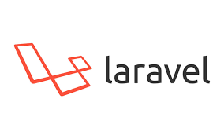
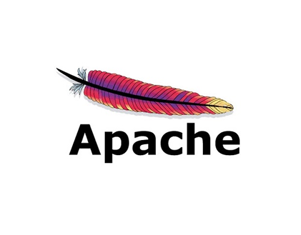

ABOUT
米本シンゴです。

2000年に専門学校を卒業後、大規模なオープン系システム開発に従事(VB6, C++)
2007年よりWebシステム構築に参画(PHP)
2009年よりEC-CUBE等のフレームワークを利用したシステム開発に従事
その後、事業会社とSIerにて事業系システム及びフロント、インフラの構築から開発まで行っています。
現在はPHP,Javascriptを主とし、EC-CUBEやWordpressのカスタマイズやサーバー構築、稼働、監視等のインフラ構築も行っています。
現在の開発環境はVagrant + CentOSをWindows環境にて利用しています。
ガジェットと雪山と野球が趣味です。
2007年よりWebシステム構築に参画(PHP)
2009年よりEC-CUBE等のフレームワークを利用したシステム開発に従事
その後、事業会社とSIerにて事業系システム及びフロント、インフラの構築から開発まで行っています。
現在はPHP,Javascriptを主とし、EC-CUBEやWordpressのカスタマイズやサーバー構築、稼働、監視等のインフラ構築も行っています。
現在の開発環境はVagrant + CentOSをWindows環境にて利用しています。
ガジェットと雪山と野球が趣味です。
利用する技術等

- 

- 


WORKS
事業会社での経験等をまとめました。
機密情報等の問題があるので業界と大まかな内容になります。
機密情報等の問題があるので業界と大まかな内容になります。
2010年～2012年
ECサイト構築
Framework: EC-CUBE2(2.4,2.11,2.12), 3
利用環境: CentOS5, PHP, MySQL
詳細設計 / 実装
新規構築及び既存構築されたECサイトのリプレイスに従事、主に開発メンバーとしてアサイン
2012年～2016年
葬儀系ポータルサイト
Framework: Ethna, Smarty
利用環境: CentOS5/6/7, PHP5/6/7, MySQL5/6/7, MariaDB10, AWS(EC2, RDS, S3), jQuery1系/2系
インフラ構築 / 仕様設計 / 実装
ポータルサイト運営の業務システム及び社内で利用するシステム、インフラ構築を設計から参画。
2014年頃よりjQuery(主にajax)を利用した動的部分や、老朽化したインフラのAWS移転等を行う。
2014年頃よりjQuery(主にajax)を利用した動的部分や、老朽化したインフラのAWS移転等を行う。
2016年～2017年、2018年
葬儀社
Framework: Laravel, Smarty
利用環境: CentOS5/6/7, PHP5/6/7, MySQL5/6/7, MariaDB10, AWS(EC2, RDS, S3), jQuery1系/2系, Docker, Github
インフラ構築 / 仕様設計 / 実装
葬儀管理システムのプロトタイプの作成(～2017年)
オフショア開発を主とした葬儀管理システムの要件定義と導入仕様検討及び、時期開発の仕様確定とベンダーコントロール(2018年)
オフショア開発を主とした葬儀管理システムの要件定義と導入仕様検討及び、時期開発の仕様確定とベンダーコントロール(2018年)
2017年～2018年
SIベンダー
Framework: Laravel, Smarty, WordPress, EC-CUBE3
利用環境: CentOS5/6/7, PHP5/6/7, MySQL5/6/7, MariaDB10, AWS(EC2, RDS, S3), jQuery1系/2系, Github
インフラ構築 / 仕様設計 / 実装
ECサイトの構築、グループ会社の大規模システムリプレイスの仕様策定から実装、ベンダーコントロールと社内リーダー
主にグループ会社の大規模システムリプレイスでは他社との折衝と仕様の決定、プロトタイプの作成と技術選定を行いディレクションも兼務
発注先への資料作成～納品までの行程を担当。
主にグループ会社の大規模システムリプレイスでは他社との折衝と仕様の決定、プロトタイプの作成と技術選定を行いディレクションも兼務
発注先への資料作成～納品までの行程を担当。
2019年～
HR・人事
Framework: CakePHP2(2.6, 2.12)/3, Laravel
利用環境: CentOS5/6/7, PHP5/6/7, MySQL5/6/7, MariaDB10, AWS(EC2, RDS, S3, SES, Lambda), jQuery1系/2系, Github
インフラ構築 / 仕様設計 / 実装
既存システム開発をベンダーから自社で行うためのチームビルディングと、環境インフラ構築
既存サイトのサーバーチューニング及びバックオフィスで利用するツール用システムの構築。
Laravelを利用したRestAPIの実装
チームマネジメント及び資料プレゼン、中長期計画の立案、システム開発を行う。
既存サイトのサーバーチューニング及びバックオフィスで利用するツール用システムの構築。
Laravelを利用したRestAPIの実装
チームマネジメント及び資料プレゼン、中長期計画の立案、システム開発を行う。
SKILL
インフラ構築からシステム要件定義、開発まで一貫して行う事が可能です。
事業系のシステムに主に携わっておりましたので事業理解を行い、改善計画等の提案が得意です。
事業系のシステムに主に携わっておりましたので事業理解を行い、改善計画等の提案が得意です。

マネジメント
現職では課長代理という役職でメンバーのマネジメント、外部委託メンバーへのコントロールを行っています。目標設定やシステム運用、ディレクション部分での指導や勤怠管理を行っています。
PHP
フレームワークの有無を問わず、ゼロスクラッチ可能です。また既存システムのリプレイスやベースとして既存システムからのアドオンとしての構築に関しても可能です。
WordPress
基本的なPHPを利用したページの生成に関しては可能です。一通りの構造の理解は出来ています。
Linux
CentOS5～7, AmazonLinux, Ubuntu, RedHatの操作が可能です。Webサーバー構築及びネットワーク設定、インフラの構築も一通り可能です。
[利用インフラ]
AWS, さくらクラウド, つかえるクラウド, Niftyクラウド
[利用インフラ]
AWS, さくらクラウド, つかえるクラウド, Niftyクラウド
データベース
サーバーの構築からサーバーチューニングまで可能です。またアプリケーション用のデータベーステーブル設計も可能です。
[利用DB]
MySQL5/6/7, MariaDB10, Postgre8/9, RDS
[利用DB]
MySQL5/6/7, MariaDB10, Postgre8/9, RDS
Git / GitHub
基本的に複数人でのプロジェクトよりも個々でのプロジェクトが多い為、個人での利用はしていますがチーム運用はしていません。
javascript/jQuery
js/jQueryでの動的コンテンツの作成可能です。ajaxを利用した非同期通信処理の経験もあります。
jQueryは1系、2系、3系の利用経験があります。
jQueryは1系、2系、3系の利用経験があります。